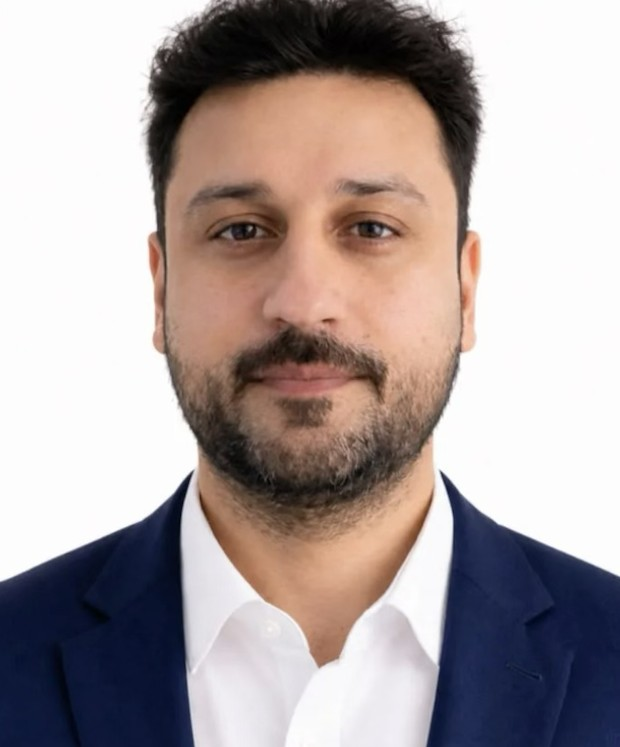

Production & process control
Running biodiesel production day to day: holding process parameters, protecting product quality and pushing yield.
Biodiesel production, maintenance & supply chain, run to spec and on budget.
15+ years keeping operations efficient, compliant and cost-controlled. I’ve led production, maintenance workshops, inventory, IT systems and audit teams, so I see the whole plant, not just one department.

Fewer stockouts and less excess inventory
ERP stock control · ABANALower operating costs through process improvement
Operations · Anjal Al KhaleejEmployees led across operations teams
Team leadershipYears in production and operations since 2009
6 roles · 3 employersMost plants split these across separate managers. I’ve run each of them myself, which means fewer hand-off gaps between production, maintenance, stores and quality.
Running biodiesel production day to day: holding process parameters, protecting product quality and pushing yield.
Preventive maintenance programmes, contractor management and coordinating repairs with production to minimise downtime.
Inventory planning and ERP stock control that keeps materials available without tying cash up in excess stock.
Compliance audits, KPI monitoring and reporting, HSE on the plant floor, and ISO 9001:2015 quality systems.
I also ran IT support, Citrix and ERP systems for two years, so I understand the data behind the operation, not just the reports it produces.
From general operations to production leadership, including nine years across four functions at ABANA.
Managed inventory planning and ERP stock control.
Led maintenance operations, preventive maintenance programmes, contractor management and equipment reliability improvements.
Managed IT support, Citrix and ERP systems, asset control and business continuity support.
Managed ATM operations, compliance audits, KPI monitoring and reporting, and staff performance reviews.
The five process stages I oversee in biodiesel production from high free-fatty-acid (FFA) feedstock. Watch a batch move through the line.
Raw oils and fats are received and checked before they enter the process.
Free fatty acids are converted to esters under heat and agitation, cutting FFA for the main reaction.
Oil reacts with methanol to form methyl esters (biodiesel). Glycerol settles out at the bottom.
Process parameters and product quality are monitored, so each batch meets specification.
Tuning the process to get more on-spec biodiesel from every tonne of feedstock, safely.
Simplified illustration of the process; not to scale.
Quality management systems and internal audit.
Hazara University
Hands-on as a user and as the person supporting them.
Let’s talk about production, operations or plant management roles in Portugal and beyond.